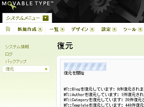

MTデータベースをSQLITEからMYSQLへの変更方法 - エックスサーバー
Movable Typeの５へアップグレードしようと思ったんですけど、当ブログではエックスサーバーの自動インストールを利用していたため、データベースをSQLITEで設定していたようなんです。
MT５ではSQLITEがサポートされていないので、４から５へアップグレードする際には、まず、４のままでSQLITEからMYSQLへデータベースを切り替えてから、アップグレードする必要がありそうです。
そんなわけで、データベースの切り替え方法について、当ページではご紹介したいと思います。
データベースをSQLITEからMYSQLへ切り替え
まず、事前の準備として、以下の点を確認しコピペでメモっておきます。
・ユーザー情報（ユーザー名やパスワードなど）
次に、エックスサーバーのサーバーパネルで、MYSQLのデータベースを文字コードＵＴＦ８で作成し、データベース情報を確認してメモっておきます。
・データベース情報
データベース名やユーザー名、パスワードなどはもちろん、「データベースバージョン切り替え - MySQL情報」の箇所で、MySQL5 ホスト名も確認してメモしておきましょう。
次に、「システムメニュー - ツール」の箇所からバックアップを選択し、すべてのブログのバックアップを作成します。
バックアップができたら、表示されたすべてのファイルをパソコン上にダウンロードするのですが、どうも１回限りしかダウンロードできないようなので、間違った場合は再度やり直しましょう。
画像が多いと数も多くなってしまいますが、確実にすべてのファイルをダウンロードしておきましょう。
・バックアップファイルのダウンロード
以上で事前準備は終了です。
次に、mt-config.cgiファイルを書き換えることになるのですが、実際に書き換える前に、こちらもコピーを保存しておくことをおすすめします。
書き換える箇所は、MYSQLの箇所なのですが、冒頭に＃がついていて無効の状態になっているはずです。
##### MYSQL #####
#ObjectDriver DBI::mysql
#Database DATABASE_NAME
#DBUser DATABASE_USERNAME
#DBPassword DATABASE_PASSWORD
#DBHost localhost
一方、SQLITEの箇所は＃がはずされており、現在はこちらの方が有効というようになっています。
ですので、MYSQLの箇所の冒頭の＃を削除して有効にし、その該当箇所に上で確認しておいたデータベース情報を記入することになります。
##### MYSQL #####
ObjectDriver DBI::mysql
Database データベース名
DBUser データベースのユーザー名
DBPassword データベースのパスワード
DBHost ホストの名前
注意したいのは、ほかのサーバーとは違い、DBHostの欄も記入するという点です。
また、データベースユーザー名は、サーバーパネルで確認する際、カッコ内つきで表示されていますが、カッコ内までは必要ありません。
加えて、現在有効になっているSQLITEの欄は、＃をつけて無効にするか、そのまま削除して無効にしてしまいましょう。そのほかは、特にいじらなくても大丈夫です。
書き換えたら、ブラウザでmt.cgiファイルにアクセスし、上で確認しておいたユーザー情報を記入します。
ちなみに、アクセスするファイルの場所ですが、私の場合はhttp://ユーザー名.xsrv.jp/mt/mt.cgiですが、人によって違いがあるかと思います。
そうこうしているうち、ＭＹ ＦＩＲＳＴ ＢＬＯＧが出来上がりますが、それはそのままほっておきます。
そして、ダウンロードしておいたブログのバックアップファイルを使い、「システムメニュー - 復元」でブログを復元するわけですが、インストールする際、歯車マークのついているmanifestファイルからインストールすることをおすすめします。
そのファイルをアップロードすると、次はこのファイル、次はこのファイルというふうに指示されますので、言われたとおりにアップロードしていくとブログが復元されます。

万一、復元に失敗した場合でも、たいていはウィジットの一部とかの場合が多いですので、手動で修正するようにしましょう。
そのようなときのために、データベースのバックアップは事前に必ずしておく必要がありますが、修正不可能になった場合でも、とりあえずは検索エンジンのキャッシュから直接htmlファイルを復元することをおすすめします。
これで４のデータベースがSQLITEからMYSQLへ切り替わるので、Movable Typeを４から５へアップロードすることができるようになるはずです。
Movable Typeを４から５へアップグレード